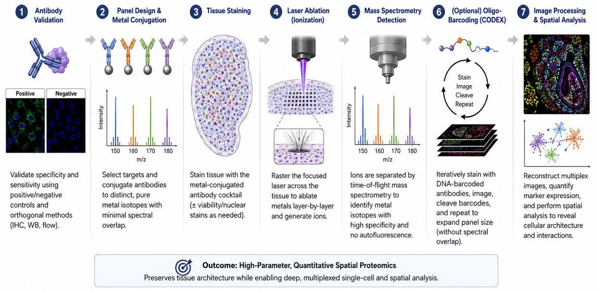
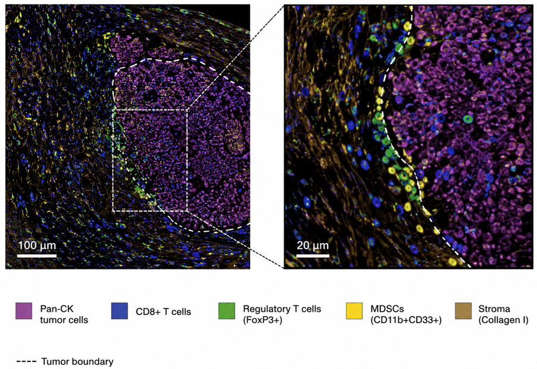
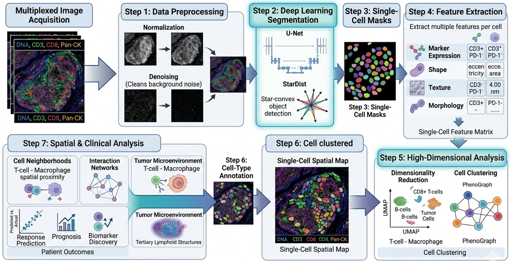

PIONEER CHIATECH PUBLICATION · ARTICLE 25 · e025 |
|---|
Multiplex Immunohistochemistry and Spatial Immunophenotyping in Precision Oncology: Predictive Biomarkers, AI-Assisted Analysis and Clinical Translation
M. M. Nengem¹* · G. O. Avwioro² · G. I. Iyare¹
¹ Department of Medical Laboratory Science, Faculty of Applied Health Sciences, Edo State University Iyamho, Nigeria.
² Department of Medical Laboratory Science, Faculty of Allied Health Sciences, Delta State University, Abraka, Nigeria.
*Corresponding author: miriamsenwua@gmail.com · avwiorog@gmail.com · iyare.godfrey@edouniversity.edu.ng
ARTICLE TYPE | VOLUME / ISSUE | ELOCATOR |
|---|---|---|
PUBLICATION | ISSUE STATUS | IDENTIFIERS |
ABSTRACT
Background: Precision oncology increasingly depends on tissue assays that preserve biomarker identity together with the spatial architecture of the tumor microenvironment (TME). Single-plex immunohistochemistry remains indispensable for routine diagnosis, but it cannot fully resolve multicellular phenotypes, immune-exclusion patterns or cell-to-cell neighborhoods that may influence response and resistance to targeted and immune therapies. Objective: To critically synthesize the technical, computational and translational evidence supporting multiplex immunohistochemistry/immunofluorescence (mIHC/IF), high-parameter spatial proteomics and AI-assisted immunophenotyping as platforms for predictive biomarker discovery. Evidence approach: The seminar evidence base was updated through a targeted review of PubMed-indexed literature, professional guidance and peer-reviewed publisher sources available through August 2026. Priority was given to formalin-fixed paraffin-embedded tissue workflows, assay validation, image analysis, spatial biomarker studies and reporting standards; this is a critical narrative review rather than a systematic review or meta-analysis. Synthesis: TSA-based multiplex fluorescence, imaging mass cytometry, MIBI-like metal-tag imaging and DNA-barcoded cyclic systems can quantify multiple proteins while retaining tissue geography. Spatial endpoints—including intratumoral CD8+ density, tumor-margin gradients, immune-exclusion patterns, tertiary lymphoid structure organization and suppressive-cell neighborhoods—provide information not available from bulk abundance alone. High-plex imaging studies and recent immunotherapy cohorts demonstrate that topology can be prognostic or predictive, but clinical use requires analytical validation, external replication and demonstration of incremental utility over established biomarkers. AI enables artifact detection, segmentation, phenotyping, clustering and graph-based spatial analysis, yet algorithmic outputs remain vulnerable to pre-analytic variation, batch effects, domain shift and opaque feature definitions. Conclusion: The most defensible near-term role of multiplex spatial pathology is not replacement of conventional pathology, but a validated extension of morphology into cell-resolved, quantitative and spatially explicit biomarker science. Standardized assay design, STORMI-aligned reporting, transparent computational pipelines and prospective clinical validation are essential for translating discovery-grade spatial signatures into clinically actionable tests.
Keywords: multiplex immunohistochemistry; multiplex immunofluorescence; spatial immunophenotyping; tumor microenvironment; predictive biomarkers; spatial proteomics; immune checkpoint inhibition; computational pathology; artificial intelligence; precision oncology
Suggested citation: Nengem, M. M., Avwioro, G. O., & Iyare, G. I. (2026). Multiplex immunohistochemistry and spatial immunophenotyping in precision oncology: Predictive biomarkers, AI-assisted analysis and clinical translation. CHIATECH Journal, 1(1), e025. ISSN pending assignment; DOI pending registration.
1. Introduction
Precision oncology has moved cancer management away from the assumption that tumors sharing an anatomical label are biologically equivalent. Genomic alterations, protein-expression states, immune composition, stromal organization and treatment history all shape therapeutic response. Contemporary reviews therefore position the TME, single-cell biology, spatial multi-omics and artificial intelligence among the major technologies extending precision oncology beyond genomic stratification alone (Qiao et al., 2025; Liu et al., 2026).
Histopathology is uniquely positioned within this transition because it preserves biological context. A conventional H&E section shows architecture but limited molecular identity, while a single-plex IHC stain adds one protein signal at a time. The biological questions raised by immunotherapy are intrinsically multivariable: Which cells express the checkpoint ligand? Are cytotoxic T cells inside tumor nests or stranded at a stromal boundary? Do regulatory T cells or suppressive myeloid populations form neighborhoods that physically separate effectors from malignant cells? Are tertiary lymphoid structures mature and strategically positioned? These are spatial questions, and their answers can be lost when tissue is homogenized or when one marker is scored independently of its neighbors (Harms et al., 2023; Lin et al., 2023).
Multiplex IHC/IF addresses this gap by measuring several markers on the same tissue section while retaining cellular coordinates. High-parameter approaches extend this logic through metal-isotope detection, DNA-barcoded cyclic imaging and related spatial-omics platforms. The resulting images are not simply visually richer slides: after segmentation and phenotyping, they become structured single-cell datasets containing marker intensities, cell identities, morphology and X-Y coordinates. This permits quantitative analysis of neighborhoods, proximity, exclusion and multicellular tissue states (Liu et al., 2026).
1.1 Scope and contribution of this review
This paper develops the original Ph.D. seminar synthesis into a publication-focused critical review with three practical aims. First, it links assay chemistry and platform choice to the biological question being asked. Second, it connects image acquisition to the computational chain required for defensible predictive biomarker discovery. Third, it proposes a translational pathway that separates discovery-grade spatial signatures from analytically validated, clinically interpretable tests. The central argument is that higher plex is valuable only when it improves biological resolution, reproducibility and clinical decision-making rather than merely increasing the number of measured channels.
2. Review Design and Evidence Synthesis
A targeted evidence update was conducted in August 2026 using PubMed-indexed records and peer-reviewed publisher sources. Search concepts included “multiplex immunohistochemistry,” “multiplex immunofluorescence,” “spatial immunophenotyping,” “spatial proteomics,” “tumor microenvironment,” “predictive biomarker,” “immunotherapy response,” “image analysis,” “artificial intelligence,” “STORMI” and “multiplex IHC best practices.” Priority was given to studies and guidance published from 2020 to 2026 that addressed FFPE tissue, mIHC/IF assay validation, high-plex imaging, spatial biomarkers, computational pathology, immunotherapy response and reproducible reporting. Foundational earlier or source-seminar references were retained where they define established methodology. Because the purpose is critical technical synthesis rather than pooled effect estimation, no PRISMA flow diagram or meta-analytic summary is presented.
Evidence was interpreted at four levels: analytical feasibility (can the assay measure what it claims to measure?); spatial validity (are cell identities and coordinates reliable?); clinical association (does a spatial feature relate to outcome or response?); and clinical utility (does the feature add reproducible value beyond existing tests and improve a real decision?). This distinction is essential because many promising spatial biomarkers are currently supported by retrospective or platform-specific evidence rather than prospective, externally validated decision thresholds.
3. Multiplex Pathology Platforms: From Single Markers to Spatially Resolved Tissue Systems
3.1 The limits of single-plex interpretation
Single-plex chromogenic IHC remains clinically robust because it combines morphology with validated antibody detection, familiar controls and established scoring systems. Its limitation is not lack of value but lack of simultaneous context. A PD-L1-positive cell, for example, may be malignant, macrophage-derived or another immune/stromal cell unless additional morphology and markers are available. Serial sections can approximate multiplexing, but section-to-section differences reduce exact cell registration and consume limited tissue. Multiplex approaches therefore become most compelling when compound phenotypes or spatial relationships are biologically important (Harms et al., 2023).
3.2 TSA-based multiplex immunofluorescence
Tyramide signal amplification (TSA) supports cyclic multiplex fluorescence by depositing a covalently bound fluorophore near the target antigen after horseradish-peroxidase activation. The antibody complex can then be removed while the deposited signal remains, allowing successive staining cycles on the same section. This architecture enables clinically familiar antibodies to be combined into multi-marker panels, but successful implementation still depends on staining order, antigen stability, spectral balance, stripping efficiency, control tissues and demonstration that each marker behaves comparably in single-plex and multiplex contexts (Harms et al., 2023; Sun et al., 2025).
3.3 Metal-tag and DNA-barcoded high-parameter imaging
Imaging mass cytometry and MIBI-like approaches use metal-conjugated antibodies and mass-based detection, thereby avoiding the conventional spectral overlap of fluorescence. DNA-barcoded cyclic systems achieve high parameter counts by repeatedly hybridizing, imaging and removing fluorescent reporters from barcode-tagged antibodies. These platforms can map complex immune, stromal and tumor phenotypes at single-cell or near-single-cell resolution, but their higher dimensionality increases the burden of panel validation, acquisition quality control, data storage and computational interpretation. The practical question is therefore not which platform has the largest theoretical plex, but which platform produces the most valid answer for the tissue, cohort and clinical question under study (Liu et al., 2026; Hendrychová et al., 2025).
Table 1. Practical comparison of tissue-based multiplex strategies
Approach | Primary readout | Principal strength | Key limitation | Best-fit use |
|---|---|---|---|---|
Single-plex chromogenic IHC | One protein marker with morphology | Mature clinical validation; low infrastructure burden | Limited simultaneous phenotype and spatial context | Routine diagnosis and validated single-marker biomarkers |
TSA-based mIHC/mIF | Moderate-plex fluorescent protein panel on one section | Co-expression and spatial proximity with FFPE compatibility | Panel-order effects, spectral balance, cyclic tissue stress | Translational immuno-oncology and candidate spatial biomarkers |
DNA-barcoded cyclic imaging | High-parameter repeated reporter cycles | Many proteins with preserved architecture | Long workflows; image registration and data-management burden | Deep immune/stromal ecosystem mapping |
IMC/MIBI-like metal imaging | High-parameter metal-tagged protein detection | Minimal spectral overlap; rich cell-state definition | Capital cost, throughput and specialist analysis | Discovery studies and high-dimensional spatial proteomics |
Spatial transcriptomic / multi-omic integration | Spatial RNA with optional protein or morphology layers | Broad molecular context linked to tissue geography | Platform-specific resolution, high computational complexity | Mechanism discovery and multimodal biomarker development |
3.4 Technical roadmap: assay validation before spatial analysis
Multiplex analysis is only as trustworthy as its first laboratory steps. Antibody specificity and sensitivity should be established using appropriate positive and negative materials, followed by panel-level testing for signal loss, cross-reactivity, unexpected epitope effects and dynamic-range imbalance. Tissue staining, image acquisition, registration and computational reconstruction should then be treated as one traceable measurement system rather than as disconnected tasks. Recent best-practice guidance emphasizes this end-to-end view because an error introduced during fixation, staining or segmentation can propagate into every downstream spatial statistic (Taube et al., 2025; Sater et al., 2025).

Figure 3. Technical roadmap from antibody validation to quantitative spatial data. The diagram is retained exactly from the authors’ Ph.D. seminar report and illustrates the progression from antibody validation and panel design through tissue staining, metal-based detection or cyclic barcoding, and spatial image analysis.
4. Spatial Immunophenotyping and Predictive Biomarker Discovery
4.1 Tumor-margin gradients and immune exclusion
Spatial immunophenotyping reframes immune infiltration from a single density value into a distributional problem. A tumor may contain many CD8+ T cells overall yet remain functionally protected if those cells are concentrated outside tumor nests. Distance-to-boundary measures, intratumoral-to-stromal ratios and compartment-specific densities can therefore distinguish inflamed from excluded architectures. These metrics are attractive because they are biologically interpretable: they ask whether effector cells are present where they can plausibly engage malignant targets.

Figure 1. Spatial distribution of CD8+ T cells relative to Pan-CK-defined tumor margins. The original seminar figure is retained exactly. It visualizes distance zones from the tumor margin and representative high-, intermediate- and low-infiltration patterns; the source seminar caption cites Wang et al. (2023, 2026).
4.2 Cellular neighborhoods and the tumor-stroma interface
Cellular neighborhoods extend analysis beyond pairwise distance. Tumor cells, cytotoxic lymphocytes, regulatory T cells, myeloid-derived suppressor cells, macrophages, fibroblasts and vascular elements can organize into recurrent local ecosystems. These neighborhoods may mark immune access, suppression, stromal exclusion or tertiary lymphoid organization. Recent metastatic triple-negative breast cancer work demonstrated that temporal and spatial TME composition can distinguish response-related states during checkpoint inhibition, underscoring that treatment can remodel tissue topology rather than simply change cell counts (Greenwald et al., 2026).

Figure 2. Spatial architecture of the tumor microenvironment. The original seminar image is retained exactly and depicts Pan-CK-positive tumor cells, CD8+ T cells, FoxP3+ regulatory T cells, CD11b+CD33+ myeloid-derived suppressor cells and collagen-rich stroma at the tumor boundary.
4.3 From descriptive maps to candidate predictive endpoints
A spatial feature becomes a plausible biomarker when it is reproducibly defined, biologically interpretable and associated with a prespecified clinical outcome. Lin et al. (2023) demonstrated that high-plex immunofluorescence combined with H&E could generate interpretable image-based models associated with progression-free survival in colorectal cancer. Wang et al. (2026) showed that the prognostic and treatment-response meaning of tertiary lymphoid structures depended on both location and maturation status in esophageal squamous cell carcinoma. Such findings illustrate a core principle: the location and organization of a cellular feature may matter as much as its abundance.
SITC best-practice guidance also notes prior meta-analytic evidence in which multiplex IHC/IF response models showed stronger summary discrimination than PD-L1 IHC, interferon-γ signatures or mutational density in anti-PD-(L)1 settings. This is important evidence of promise, but it should not be interpreted as proof that every multiplex panel will outperform established biomarkers. Assay composition, cancer type, treatment, endpoint, image analysis and validation cohort can all change performance (Taube et al., 2025).
Table 2. Interpretable spatial features and their translational meaning
Spatial feature | Biological question | Potential interpretation | Major analytical caveat |
|---|---|---|---|
Intratumoral CD8+ density | Are cytotoxic lymphocytes inside tumor nests? | Higher direct effector access | Segmentation and tumor-compartment definition must be reliable |
Tumor-margin infiltration gradient | Do effectors penetrate beyond the invasive edge? | Distinguishes infiltration from peripheral accumulation | Distance bins and tumor-boundary algorithms require prespecification |
CD8–tumor proximity | Are effectors physically positioned to contact malignant cells? | Potentially stronger mechanistic signal than bulk counts | Nearest-neighbor metrics are sensitive to cell-density and tissue geometry |
Treg/MDSC suppressive neighborhoods | Are suppressive populations locally concentrated around tumor or effectors? | Candidate mechanism of immune dysfunction or exclusion | Phenotype definitions and rare-cell errors can strongly alter estimates |
Tertiary lymphoid structure location/maturity | Are organized immune aggregates present in clinically relevant compartments? | Potential prognostic or treatment-response information | TLS identification and maturity criteria vary across studies |
Checkpoint co-expression states | Do T cells co-express PD-1, LAG-3, TIM-3, TIGIT or related markers? | Candidate exhaustion/compensatory signaling phenotype | Expression does not automatically establish functional exhaustion |
Tumor-stroma interface topology | Does stroma form a barrier or permissive interface? | May explain immune exclusion despite adequate immune abundance | Requires reproducible stromal segmentation and external validation |
5. From Pixels to Single-Cell Data: Computational Pathology and Artificial Intelligence
5.1 Pre-analytic and image-quality control
AI cannot rescue invalid input. Ischemia, fixation, section thickness, antigen retrieval, staining order, autofluorescence, scanner focus, tissue folds, tears and registration errors all alter the image presented to an algorithm. Computational pathology guidance increasingly emphasizes that models must be developed with an explicit understanding of how tissue becomes a digital image, because laboratory artifacts can masquerade as biological signal and domain shift can degrade performance at a new site (Dammak et al., 2026; Alwahaibi, 2026).
5.2 Segmentation, phenotyping and dimensionality reduction
Cell segmentation converts pixels into biological objects. U-Net-derived convolutional architectures, StarDist-like object detection and other deep-learning methods are widely used to identify nuclei and estimate cell boundaries in crowded tissue. Once segmented, each cell can be represented by marker intensities, shape, texture, morphology and coordinates. Phenotyping can then combine rule-based gating, supervised classification or unsupervised clustering. UMAP, t-SNE and graph-based clustering are useful exploratory tools, but cluster labels must be anchored to interpretable marker definitions rather than treated as automatically valid cell types.

Figure 4. AI-driven pixel-to-phenotype workflow. The original seminar diagram is retained exactly, showing multiplex image acquisition, preprocessing, U-Net/StarDist segmentation, single-cell masks, feature extraction, high-dimensional clustering, cell-type annotation and spatial/clinical analysis.
5.3 Spatial graphs, prediction and explainability
The final computational layer treats cells or tissue regions as spatially related entities. Graphs can represent cells as nodes and physical proximity or inferred interactions as edges, allowing models to quantify neighborhoods, interface structures and non-random multicellular arrangements. Recent Spatial AI literature shows how graph neural networks, attention mechanisms and multimodal models can extract topological features of immune evasion (Lang et al., 2026). For clinical biomarker work, however, model complexity should be justified by incremental performance, calibration, robustness and interpretability. A feature that cannot be defined consistently across scanners, laboratories or patient populations is not yet a clinical biomarker, regardless of training-set accuracy.
Table 3. Computational pipeline and minimum validation questions
Pipeline stage | Core output | Minimum validation question |
|---|---|---|
Image acquisition / registration | Aligned multi-channel tissue image | Are focus, illumination, channel alignment and tissue integrity acceptable? |
Segmentation | Nuclear/cellular objects | Does the model separate touching cells and avoid systematic tumor- or tissue-specific errors? |
Marker quantification | Per-cell intensity features | Are thresholds and normalization stable across batches and controls? |
Phenotyping | Biologically named cell states | Are phenotype rules reproducible and pathologist-reviewable? |
Dimensionality reduction / clustering | Low-dimensional maps or clusters | Are clusters stable, interpretable and not artifacts of preprocessing? |
Spatial feature extraction | Distances, neighborhoods, interfaces, graphs | Are spatial definitions prespecified and insensitive to arbitrary parameter choices? |
Predictive modeling | Patient-level score or risk class | Is the model calibrated, externally validated and compared with a strong baseline? |
Clinical interpretation | Actionable or research conclusion | Does the output add decision value beyond existing biomarkers and expert pathology? |
6. Clinical Translation to Targeted Therapy and Immunotherapy
6.1 Predicting immune-checkpoint inhibitor response
PD-L1 expression, microsatellite instability, tumor mutational burden and selected gene-expression signatures can inform immunotherapy use in specific settings, but they do not capture the complete spatial organization of the immune response. Multiplex spatial pathology adds a distinct layer: whether effector cells are present at the tumor interface, whether suppressive cells are interposed, whether checkpoint signals occur in the same local niche and whether organized immune structures are present. Greenwald et al. (2026) provide strong contemporary evidence that spatial and temporal TME states can track response to immune checkpoint inhibition, while Liu et al. (2026) place such findings within the broader shift toward spatially resolved predictive oncology.
6.2 Mechanisms of resistance and rational combination therapy
Spatial maps are particularly useful when a conventional biomarker appears biologically insufficient. A tumor may be PD-L1 positive and rich in CD8+ cells but still fail therapy if those cells are excluded by a fibroblast-rich boundary, associated with suppressive macrophages or co-express multiple inhibitory receptors. Multiplex panels can therefore generate mechanistic hypotheses for combination therapy: checkpoint blockade plus stromal targeting, myeloid modulation, anti-angiogenic therapy or additional inhibitory-receptor blockade. These hypotheses should remain explicitly hypothesis-generating until supported by treatment-linked cohorts and prospective validation.
6.3 The validation ladder from discovery to clinical use
The distinction between association and clinical utility is critical. A clinically credible spatial biomarker should progress through a staged validation ladder: biological rationale; analytically validated assay; reproducible feature definition; locked computational pipeline; internal validation; external validation; comparison against established biomarkers; calibration and clinically meaningful thresholds; prospective or trial-embedded confirmation; and evidence that using the test changes decisions or improves outcomes. Skipping these stages risks converting visually compelling tissue maps into unstable biomarkers.
Table 4. Translational validation ladder for a multiplex spatial biomarker
Stage | Evidence requirement | Publication-grade output |
|---|---|---|
1. Biological plausibility | Mechanism linked to tumor–immune biology | Clearly specified cell populations, compartments and hypothesis |
2. Analytical validity | Reproducible staining, controls and imaging | Assay precision, dynamic range, repeatability and failure criteria |
3. Computational validity | Locked segmentation, phenotyping and feature definitions | Versioned software, thresholds, QC rules and auditability |
4. Internal clinical validity | Association with prespecified endpoint | Effect estimate with uncertainty; strong comparator model |
5. External validation | Independent laboratory, cohort or site | Generalization across batches, scanners and patient populations |
6. Incremental value | Improvement over established biomarkers | Discrimination, calibration and decision-relevant added value |
7. Prospective utility | Testing embedded in clinical workflow or trial | Evidence that test-guided decisions are feasible and beneficial |
7. Standardization, Reporting and Reproducibility
7.1 SITC best practices and STORMI reporting standards
Clinical translation requires a common reporting language. SITC guidance emphasizes validation of multiplex staining, image analysis and data management, while the 2025 STORMI consensus establishes a dedicated reporting framework for multiplex IHC/IF assays (Taube et al., 2025; Sater et al., 2025). These initiatives are important because two laboratories can generate visually similar multiplex images yet derive different cell counts or spatial conclusions if they use different pre-analytics, segmentation rules, phenotype thresholds, region definitions or data-exclusion criteria.
A publication-ready multiplex study should therefore report enough information for another competent laboratory to understand how the slide became a quantitative dataset. That includes specimen selection, fixation and sectioning, antibody clones and dilutions, panel order, controls, imaging platform, exposure settings or acquisition parameters, registration, segmentation software and version, phenotype rules, compartment definitions, spatial metrics, statistical models, missing-data handling, batch correction, quality-control exclusions and data/code availability.
Table 5. STORMI-aligned minimum reporting domains for multiplex tissue studies
Domain | Minimum information to report |
|---|---|
Specimens / pre-analytics | Cohort selection, tissue type, fixation, processing, section thickness, storage and relevant exclusions |
Assay / panel design | Antibody clone, vendor, dilution, antigen retrieval, stain order, fluorophore/metal/barcode assignment, rationale |
Controls and validation | Positive/negative controls, single-plex vs multiplex concordance, cross-talk, stripping/bleaching checks, repeatability |
Image acquisition | Scanner/microscope/platform, objective/resolution, exposure/acquisition settings, spectral unmixing and registration |
Segmentation and phenotype rules | Software/version, model source, training/validation material, thresholds, cell-boundary method, phenotype logic |
Spatial analysis | Tumor/stroma definitions, distance rules, neighborhood radius, graph construction, edge handling and compartment selection |
Statistics and prediction | Prespecified outcomes, comparators, uncertainty, multiple-testing strategy, cross-validation and external validation |
Data governance | Metadata, provenance, audit trail, image/data storage, de-identification, code/model versioning and sharing statement |
8. Practical Implementation in Resource-Constrained Pathology Systems
The translational value of multiplex pathology should not be equated with immediate purchase of the most expensive high-plex platform. Laboratories with constrained capital, scanner capacity or computational infrastructure can adopt a staged strategy. A first phase can focus on rigorously validated low- to moderate-plex panels answering a narrow clinical or research question, combined with whole-slide imaging and transparent analysis. A second phase can add automated spectral unmixing, reproducible segmentation and multicellular spatial metrics. High-plex metal imaging, barcoded cyclic platforms or spatial multi-omics can then be accessed through reference laboratories or research consortia until local throughput, staff competence and clinical demand justify capital investment.
This staged model is especially relevant to African and other lower-resource settings because it prioritizes practical impact: assay validity, workforce development, sustainable reagent supply, data governance and clinically meaningful questions. A six-marker panel that is reproducible and linked to a defined decision may be more valuable than a forty-marker panel with unstable acquisition and no external validation. Cross-disciplinary training of pathologists, medical laboratory scientists, biomedical engineers and data scientists is therefore as important as instrument acquisition.
• Begin with a defined question and minimum sufficient panel rather than maximum possible plex.
• Use reference tissues, batch controls and documented QC criteria from the first implementation phase.
• Keep pathology review in the loop for tumor/stroma annotation, phenotype plausibility and algorithm-failure review.
• Version software, phenotype rules and spatial parameters so that analyses can be reproduced after upgrades.
• Plan storage and backup before generating large whole-slide multiplex datasets.
• Where advanced platforms are unavailable locally, use collaborative referral models while retaining specimen provenance, metadata and analytical transparency.
9. Discussion
The literature now supports a clear conceptual advance: predictive pathology is moving from isolated marker abundance toward tissue systems biology. High-plex images reveal that an immune cell’s meaning depends on what it expresses, where it is located and which cells surround it. This explains why bulk or single-marker assays can miss biologically decisive states such as stromal exclusion, suppressive neighborhoods or organized lymphoid structures. The strongest recent studies do not simply count more markers; they translate spatial organization into interpretable features linked to clinical outcomes (Lin et al., 2023; Greenwald et al., 2026; Wang et al., 2026).
At the same time, the field faces a reproducibility challenge. Higher dimensionality creates more opportunities for technical variation, researcher degrees of freedom and overfitting. Panel composition, antibody performance, scanner characteristics, segmentation errors, phenotype thresholds, neighborhood radii and statistical choices can all change the final biomarker. SITC best-practice and STORMI initiatives therefore represent a necessary maturation of the field: the scientific claim must be traceable from tissue acquisition to the final patient-level score (Taube et al., 2025; Sater et al., 2025).
AI adds both power and responsibility. Deep-learning segmentation and graph-based spatial modeling can quantify structures that human observers cannot reliably measure at scale, but algorithmic complexity does not eliminate biological uncertainty. Models must be benchmarked against expert-reviewed material, tested across sites, monitored for domain shift and reported with sufficient detail to permit independent scrutiny. In this sense, computational pathology should be viewed as measurement science rather than as an autonomous diagnostic substitute.
9.1 Limitations of the evidence base
This review is intentionally critical and narrative rather than systematic. The evidence base spans heterogeneous tumor types, treatment regimens, tissue formats, imaging platforms and analytical pipelines, so effect sizes should not be generalized across settings. Many spatial biomarkers remain retrospective, exploratory or platform-specific; prospective clinical-utility evidence is still limited. Tissue sampling also remains a biological constraint because one section may not capture the full spatial heterogeneity of a tumor. Finally, rapid platform and software evolution means that reporting standards, reference datasets and regulatory expectations will continue to change. These limitations strengthen the case for transparent methods and external validation rather than diminishing the value of spatial pathology.
10. Conclusion and Recommendations
10.1 Conclusion
Multiplex immunohistochemistry, multiplex immunofluorescence and related spatial-proteomic technologies extend pathology from one-marker-at-a-time scoring to cell-resolved analysis of the tumor ecosystem. Their most important contribution is not the absolute number of markers measured but the preservation of biological context: cell identity, compartment, distance, neighborhood and tissue architecture. This context can reveal immune access, exclusion, suppression and organized immune structures that are invisible to bulk measurements and difficult to reconstruct from serial single-plex sections.
Current evidence supports multiplex spatial pathology as a powerful platform for predictive biomarker discovery and mechanistic research in precision oncology. However, clinical adoption should remain evidence-led. Discovery signatures must be converted into analytically validated, reproducibly defined and externally validated endpoints before they are used for treatment selection. AI should strengthen measurement, not obscure it. The path to clinical impact therefore runs through standardized laboratory practice, transparent computational methods, STORMI-aligned reporting, multidisciplinary oversight and prospective validation.
10.2 Recommendations
• Validate each marker both individually and within the multiplex panel, with documented positive and negative controls.
• Predefine tumor, stromal and spatial compartments before outcome analysis whenever the study design permits.
• Report spatial features with exact mathematical definitions rather than descriptive labels alone.
• Benchmark segmentation and phenotype assignment against expert-reviewed regions and report known failure modes.
• Compare candidate spatial biomarkers against strong conventional baselines such as validated IHC or established molecular markers.
• Use independent external cohorts before proposing clinical cutoffs or treatment-selection rules.
• Adopt SITC best-practice and STORMI reporting domains as routine manuscript and laboratory quality-control checklists.
• Build scalable data governance, model versioning and multidisciplinary training into implementation plans from the outset.
• Prioritize parsimonious, clinically interpretable panels when they answer the question as well as more complex high-plex systems.
11. Declarations
Ethics approval: Not applicable. This article is a critical review and does not report new human-participant or animal experimentation.
Consent for publication: Not applicable; no identifiable participant information is reported.
Author contributions (CRediT): M. M. Nengem — conceptualization, investigation, literature synthesis, visualization and writing—original draft. G. O. Avwioro — supervision, validation and writing—review & editing. G. I. Iyare — supervision, validation, methodology review and writing—review & editing. All authors approved the final publication version and accept responsibility for its scholarly integrity.
Funding: No specific external grant is reported for this review.
Competing interests: The authors declare no competing interests.
Data and code availability: No new primary dataset or software code was generated for this review. Evidence is traceable to the cited literature.
Figure provenance: Figures 1–4 are retained exactly from the authors’ Ph.D. seminar report supplied for publication preparation; captions identify their analytical context.
AI-assisted editorial support: AI-assisted tools were used for language refinement, structural harmonization, formatting and reference-consistency checking. Scientific interpretation, source verification, authorship accountability and final approval remain with the authors and journal editors.
Copyright and licence: © 2026 The Authors. Published by CHIA TECH SOLUTIONS AND RESOURCES LIMITED (RC 1839865). This open-access article is distributed under the Creative Commons Attribution 4.0 International (CC BY 4.0) licence, except for third-party material otherwise identified.
References
Allam, M., Cai, S., & Coskun, A. F. (2020). Multiplex bioimaging of single-cell spatial profiles for precision cancer diagnostics and therapeutics. npj Precision Oncology, 4, 11. https://doi.org/10.1038/s41698-020-0114-1
Alwahaibi, N. (2026). Artificial intelligence in small tissue biopsies: Diagnostic applications, histochemical integration, and methodological challenges in surgical pathology. Histochemistry and Cell Biology, 164(1), 35. https://doi.org/10.1007/s00418-026-02490-w
Dammak, S., Caputo, A., Montezuma, D., L’Imperio, V., Oliveira, S. P., & European Society of Digital and Integrative Pathology (ESDIP). (2026). Decoding (digital) histopathology: The building blocks for computational researchers. PLOS Digital Health, 5(5), e0001148. https://doi.org/10.1371/journal.pdig.0001148
Greenwald, N. F., Nederlof, I., Sowers, C., Ding, D. Y., Park, S., Kong, A., et al. (2026). Temporal and spatial composition of the tumor microenvironment predicts response to immune checkpoint inhibition in metastatic TNBC. Nature Cancer, 7(3), 435–450. https://doi.org/10.1038/s43018-026-01114-5
Harms, P. W., Frankel, T. L., Moutafi, M., Rao, A., Rimm, D. L., Taube, J. M., Thomas, D., Chan, M. P., & Pantanowitz, L. (2023). Multiplex immunohistochemistry and immunofluorescence: A practical update for pathologists. Modern Pathology, 36(7), 100197. https://doi.org/10.1016/j.modpat.2023.100197
Hendrychová, R., Čížková, K., Hraboš, D., & Bouchal, J. (2025). Current methods in multiplex immunohistochemistry for formalin-fixed tissue samples. Československá Patologie, 61(4), 210–220.
Lang, L., Cui, Y., Wang, H., & Xiao, Y. (2026). Spatial AI in cancer: Mapping immune evasion topology through multi-modal omics and deep learning. Frontiers in Oncology, 16, 1762907. https://doi.org/10.3389/fonc.2026.1762907
Lin, J.-R., Chen, Y.-A., Campton, D., Cooper, J., Coy, S., Yapp, C., et al. (2023). High-plex immunofluorescence imaging and traditional histology of the same tissue section for discovering image-based biomarkers. Nature Cancer, 4(7), 1036–1052. https://doi.org/10.1038/s43018-023-00576-1
Liu, Y., Dai, Y., & Wang, L. (2026). Spatial omics at the forefront: Emerging technologies, analytical innovations, and clinical applications. Cancer Cell, 44(1), 24–49. https://doi.org/10.1016/j.ccell.2025.12.009
Qiao, D., Wang, R. C., & Wang, Z. (2025). Precision oncology: Current landscape, emerging trends, challenges, and future perspectives. Cells, 14(22), 1804. https://doi.org/10.3390/cells14221804
Sater, S., Bifulco, C. B., Rodriguez-Canales, J., Yeong, J., Akturk, G., Angelo, M., Ballesteros-Merino, C., Bankhead, P., Basu, S., Blando, J. M., Brajkovic, S., Cassano, M., Chen, B. J., Coskun, A. F., Cottrell, T. R., De Andrea, C. E., Edwards, R. H., Egelston, C., Engle, L. L., ... Taube, J. M. (2025). Society for Immunotherapy of Cancer: Standards for Reporting of Multiplex Immunohistochemistry/Immunofluorescence Assays (STORMI). Journal for ImmunoTherapy of Cancer, 13(12), e012280. https://doi.org/10.1136/jitc-2025-012280
Sun, A. K., Fan, S., & Choi, S. W. (2025). Exploring multiplex immunohistochemistry (mIHC) techniques and histopathology image analysis: Current practice and potential for clinical incorporation. Cancer Medicine, 14(1), e70523. https://doi.org/10.1002/cam4.70523
Taube, J. M., Sunshine, J. C., Angelo, M., Akturk, G., Eminizer, M., Engle, L. L., Ferreira, C. S., Gnjatic, S., Green, B., Greenbaum, S., Greenwald, N. F., Hedvat, C. V., Hollmann, T. J., Jiménez-Sánchez, D., Korski, K., Lako, A., Parra, E. R., Rebelatto, M. C., Rimm, D. L., ... Bifulco, C. B. (2025). Society for Immunotherapy of Cancer: Updates and best practices for multiplex immunohistochemistry (IHC) and immunofluorescence (IF) image analysis and data sharing. Journal for ImmunoTherapy of Cancer, 13(1), e008875. https://doi.org/10.1136/jitc-2024-008875
Wang, L., Li, J., Ao, Y., Yu, Y., Zhai, J., Zhang, Y., Wu, L., Hao, J., Hu, Y., Wang, Q., Yin, F., & Liu, T. (2026). Spatial distribution analysis of tertiary lymphoid structures in esophageal squamous cell carcinoma predicts patient survival and response to neoadjuvant chemo-immunotherapy. Journal of Translational Medicine, 24, 484. https://doi.org/10.1186/s12967-026-07950-4
Wang, L., Wang, D., Zeng, X., Zhang, Q., Wu, H., Liu, J., et al. (2023). Exploration of spatial heterogeneity of tumor microenvironment in nasopharyngeal carcinoma via transcriptional digital spatial profiling. International Journal of Biological Sciences, 19(7), 2256–2269. https://doi.org/10.7150/ijbs.74653
CHIATECH Journal · Volume 1, Issue 1 · July 2026 · e025 · Pioneer Issue · Article 25